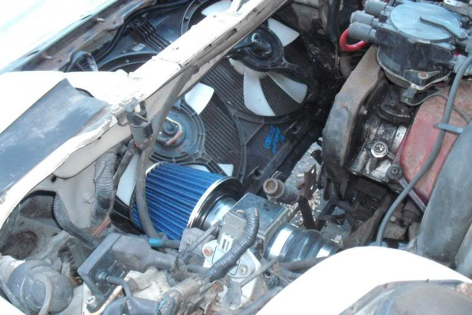

-
Having an overheating problem. Only happens in the summer with temps high 80's/90's and/or when the A/C is on. You can see the modifications in my signature. I did have to lose the A/C condenser fan with installation of the intercooler. Saw in another thread where a person had similar mods and issues with overheating. He enclosed the air filter and, I guess, routed cool air to the enclosure. His filter, like mine, was receiving hot air that was blown in by the dual fans. Would have thought the Champion three-row would have alleviated that issue.
Is this as simple as shielding the filter from the hot air produced by the fans? Do I need to go with a narrower aftermarket fan for the condenser? Would the loss of that fan wreak this much havoc on the whole cooling system?
Right now, in the cooler months the car is running great.1986zxt w/ '86, 56k mile, na engine (turbo bits swapped), K&N intake, 3" CM Performance turbo-back exhaust, Eibachs, KYB shocks, Front Mount Intercooler (2.5" plumbing), Turbosmart MBC/9 lbs, recirculating BOV, ASCO plenum, dual fans, Maxima alt, Champion 3 row Radiator.
2013 Ford Taurus SHO Performance Package -
it shouldn't cause issue. I would be more wary of whatever you're using to control the fans, and if the thermostat is an issue. that rad does a great job, and shouldn't take much to keep cool.Damn dirty angels....these cars!
Current Daily Driver - 86 Turbo.
Under the cover - THE BANANA… that needs to be re-energized.
sigpic -
Actually the fans are not currently on a thermostat and run all the time.1986zxt w/ '86, 56k mile, na engine (turbo bits swapped), K&N intake, 3" CM Performance turbo-back exhaust, Eibachs, KYB shocks, Front Mount Intercooler (2.5" plumbing), Turbosmart MBC/9 lbs, recirculating BOV, ASCO plenum, dual fans, Maxima alt, Champion 3 row Radiator.
2013 Ford Taurus SHO Performance Package -
Are you losing coolant? And is the area on the radiator where your e fan is mounted have shrouding where the fan is not covering? Also your fans are pulling fans, right?http://z31performance.com/showthread…2-2-(-now-NA2T
My build thread (: -
I found the thread I was referring to. It was boosted300's car. I have been pm'ing with him. The rad is a brand new champion with no lost coolant. The fans are a cheaper e-bay product with no shroud and they are pulling/drawing through. Boosted300 indicates he has the Span dual fan, 1300cfm. He states the Champion rad with this fan set-up cleared up his overheating issues. I think I will look at the Spal and champion products to find a stronger fan set up and also an accompanying shroud. Hoping this will clear up the issue.1986zxt w/ '86, 56k mile, na engine (turbo bits swapped), K&N intake, 3" CM Performance turbo-back exhaust, Eibachs, KYB shocks, Front Mount Intercooler (2.5" plumbing), Turbosmart MBC/9 lbs, recirculating BOV, ASCO plenum, dual fans, Maxima alt, Champion 3 row Radiator.
2013 Ford Taurus SHO Performance Package -
The shroud will fix your problem. Guaranteed.http://z31performance.com/showthread…2-2-(-now-NA2T
My build thread (: -
That's the hope. If anyone sees a hole in the plan or is aware of other issues that could contribute to the problem feel free to chime in.1986zxt w/ '86, 56k mile, na engine (turbo bits swapped), K&N intake, 3" CM Performance turbo-back exhaust, Eibachs, KYB shocks, Front Mount Intercooler (2.5" plumbing), Turbosmart MBC/9 lbs, recirculating BOV, ASCO plenum, dual fans, Maxima alt, Champion 3 row Radiator.
2013 Ford Taurus SHO Performance Package -
When I got the 3 core Champion radiator, I had a massive 16" fan with no shroud. It regularly overheated.
I then went to the dual Maxima fans. No issues since then. These have nice shrouds that cover the entire area of the radiator.
-
Just found out that the Champion radiator I bought does not have a corresponding shroud. I guess I'll go with the Maxima fans and shroud. What year Maxima had the dual fans?
amreboot, does your air filter location above the fans cause an issue? Mine lays in the stock location and it gets blasted by the hot air off the fans. Going to have an enclosure fabbed to deflect some of the heat. There is a hole about 3" in diameter to the right of the pass headlight (as you are facing the engine bay). Is that an inlet for "cool" air?1986zxt w/ '86, 56k mile, na engine (turbo bits swapped), K&N intake, 3" CM Performance turbo-back exhaust, Eibachs, KYB shocks, Front Mount Intercooler (2.5" plumbing), Turbosmart MBC/9 lbs, recirculating BOV, ASCO plenum, dual fans, Maxima alt, Champion 3 row Radiator.
2013 Ford Taurus SHO Performance Package -
You need the 89-94 Maxima fans. You will need to trim off about 1-2" off the entire left side to get it to sit perfectly on the radiator. You will see what needs to be done when you lay the Maxima fans down on the radiator. Also, snatch 2 of the brown relays with about 6" of harness pigtail from the same Maxima so you can wire up the fans properly. Then search for the wiring diagrams to wire them properly.
1986 300ZX Turbo…sold
1990 Skyline GT-R…new money pit
2014 Juke Nismo RS 6-speed…daily -
Maxima fans will do the job,I have the maxima fans for almost 10 years now with no problems.got the fans for like 30bucks at the junkyard. -
Thanks for the input guys. Stopped by the local JY and they had nothing. Off to the pick-n-pull1986zxt w/ '86, 56k mile, na engine (turbo bits swapped), K&N intake, 3" CM Performance turbo-back exhaust, Eibachs, KYB shocks, Front Mount Intercooler (2.5" plumbing), Turbosmart MBC/9 lbs, recirculating BOV, ASCO plenum, dual fans, Maxima alt, Champion 3 row Radiator.
2013 Ford Taurus SHO Performance Package -

Got one in 87T and this is my 86T build in progress.Cha iro
enjoy building it yourself.
if it fails, fuck it.
at least you gave it a whirl. -
U can also use the dual fans from a V6 ford contour, I have them and they cover the rad well. It is something the fox body guys do because they are lower-profile than most. My build thread has an example of the install. Good luck!Butter (credit where credit is due): "You have this "gift" where you can make cooking a Hot Pocket seem like you need a certain wavelength microwave and involve brown mustard."

Copyright © 2006–. All rights reserved. Privacy Policy